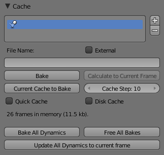

Cache¶

Particles Cache Settings.
Emitter systems use a unified system for caching and baking (together with softbody and cloth). The results of the simulation are automatically cached to disk when the animation is played, so that the next time it runs, it can play again quickly by reading in the results from the disk. If you Bake the simulation the cache is protected and you will be asked when you are trying to change a setting that will make a recalculating necessary.
小技巧
Beware of the Start and End Settings
The simulation is only calculated for the positive frames in-between the Start and End frames of the Bake panel, whether you bake or not. So if you want a simulation longer than 250 frames you have to change the End frame!
Caching¶
- As animation is played, each physics system writes each frame to disk,
between the simulation start and end frames.
These files are stored in folders with prefix
blendcache, next to the blend-file. Note that for the cache to fill up, one has to start playback before or on the frame that the simulation starts. - The cache is cleared automatically on changes. But not on all changes, so it may be necessary to free it manually e.g. if you change a force field.
- If it is impossible to write in the subdirectory there will be no caching.
- The cache can be freed per physics system with a button in the panels,
or with the
Ctrl-Bshortcut key to free it for all selected objects. - If the file path to the cache is longer than what is possible with your operating system (more than 250 characters for example), strange things might happen.
Baking¶
- The system is protected against changes after baking.
- The Bake result is cleared also with
Ctrl-Bfor all selected objects or click on Free Bake for a singular particle system. - If the mesh changes the simulation is not calculated anew.
- Sorry: no bake editing for particles like for softbodies and clothes.
Two notes at the end:
- For renderfarms, it is best to bake all the physics systems, and then copy the blendcache to the renderfarm as well.
- Be careful with the sequence of modifiers in the modifier stack (as always). You may have a different number of faces in the 3D View and for rendering (e.g. when using subdivision surface), if so, the rendered result may be very different from what you see in the 3D View.